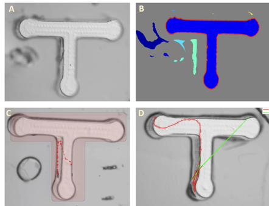

|
 |
Cooperate with Eleni Gourgou
Our goal of the research is to find the motion trails of the elegans. However in the videos, the elegans creep in a Trapezoidal maze (T-maze Fig.A) and due to the camera refocusing and unpredictable noise, only using frame difference method cannot find stable and correct motion trails. To solve this problem, first, the Chan-Vecse active contour method and SVD are used to extract contours of T-maze (Fig.B red line).
Second, I create a T-shape polygon. By the Procrustes Transformation method, the polygon is rotated and shifted to have maximal overlap with the extracted contour(Fig.C). Third, I only focus the pixels inside the T-shape polygon and apply the Frame Difference method to find motion trails of the elegans. Finally, I use the the K-Nearest Neighbor (KNN) algorithm to smooth the motion trails(Fig.D, red line: the final trail, green line: trails using the Frame Difference method directly).
Publication(in preparation):
Sakelaris B., Li Z., Sun J., Banerjee S., Booth V., Gourgou E.: “Modelling learning in C. elegans chemosensory and locomotive circuitry for T-maze navigation”.
MATLAB Code: Github
Video Presentation: YouTube
|